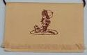

Ha gyermeke már búcsúzik az óvodától:
ajánljuk hímzett BALLAGÁSI TARISZNYÁINKAT.
Nyers színû vászon, barna zsinórral:



A tarisznyák mérete 16 x 12 cm. A zsinór hossza gyerekeknek 80 cm, óvónéniknek 125 cm.
Néhány kép a régebben rendelt tarisznyákról:


ÁRAK:


Egy hímzett jel a tarisznyán (a mi ovisjeleink közül bármelyik, minden tarisznyán egyforma jel):
700 Ft/db.
Jel + évszám
(minden tarisznyán egyforma jel):
800 Ft/db.
A csoport jele, a csoport nevével és évszámmal együtt:
950 Ft/db.
A gyermek saját jele és neve + a csoport neve:
1200 Ft/db.
Az óvoda/csoport saját logójával hímzett tarisznyát is szívesen elkészítjük, az árat a logo ismeretében adjuk meg.
Ha gyermeke már nem az óvodától búcsúzik,
ajánljuk iskolásoknak, érettségizõknek való tarisznyáinkat:

Egy hímzett virág a tarisznyán + évszám:
700 Ft/db.
az iskola neve/logoja + évszám
mennyiségtõl függõen
7-800 Ft/db.
A tarisznyák szállítási határideje kb. 3 hét. Megrendeléskor 20% elõleget kérünk átutalni!